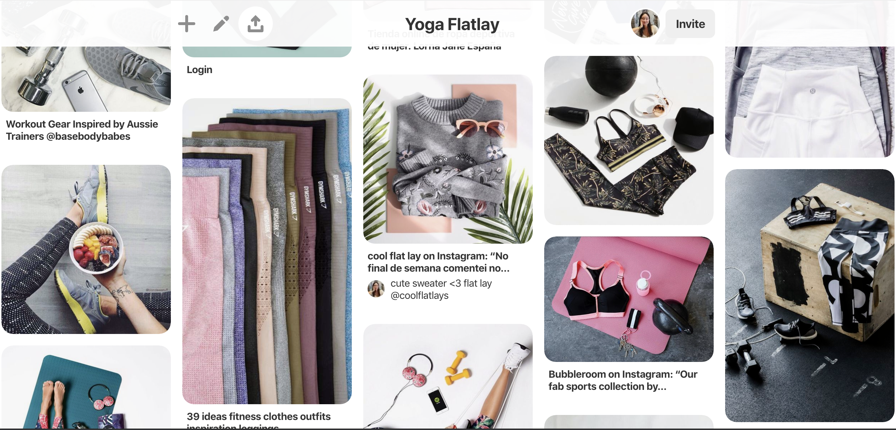
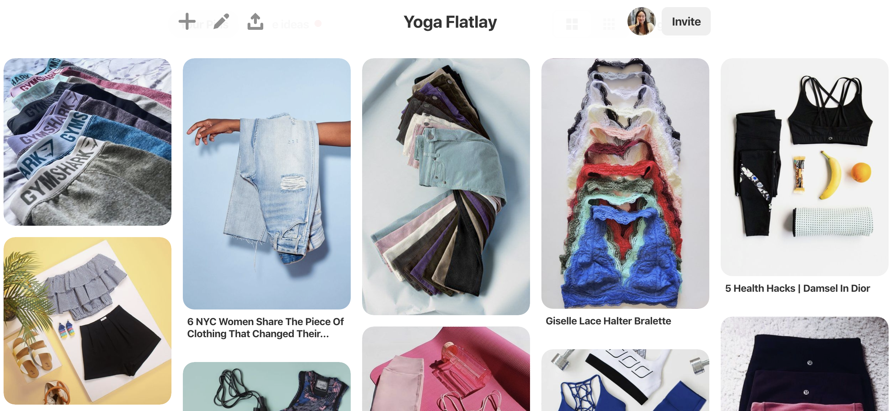
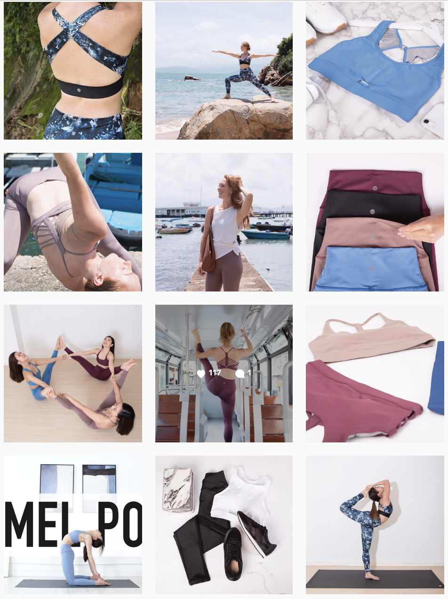

FLATLAY CONTENT
Marketing
Client: Rising Lotus Limited
Challenge:
Create instagram content that is different to current featured content, as the account needs some variety in posts. Content must be professional and emphasize the athleisure as aesthetically as possible.
Outcome:
Created different flatlay content that have items in the pictures that compliment the outfits advertised and also potentially combining things customersa are interested in outside Rising Lotus merchandise.

INSPIRATION
The content was created in three steps. One, was to find inspiration to how we should create this content. I wanted to make something that is different to what has been used for instagram content, as that is the main source of promotions and marketing. I decided that flatlays will be really interesting as not alot of athleisure brands do this, as most of the time athleisure is presented best on people. When the clothes are not on, the sports bra and leggings have no shape, which is not complementary. I chose to find inspiration on pinterest. Here is the final board I created.  
CONTENT PHOTOSHOOT
Next, we had to set up the photoshoot. We brought along different kinds of props that we felt would be relatable to our customers. Props include: Waterbottle, Earphones, Car Keys, Sports Shoes, Yoga Mat, Yoga Blocks, etc...
This experience was really fun as I worked with both the photographer and my boss into creating the outfits to work with the props on a flat background.
To the right is a video of us shooting the content.
FINAL OUTCOME
Overall, the content turned out quite well. The engagement was nice and that it suited aesthetically with the instagram feed and brand image. Here is the final result on the instagram feed:
